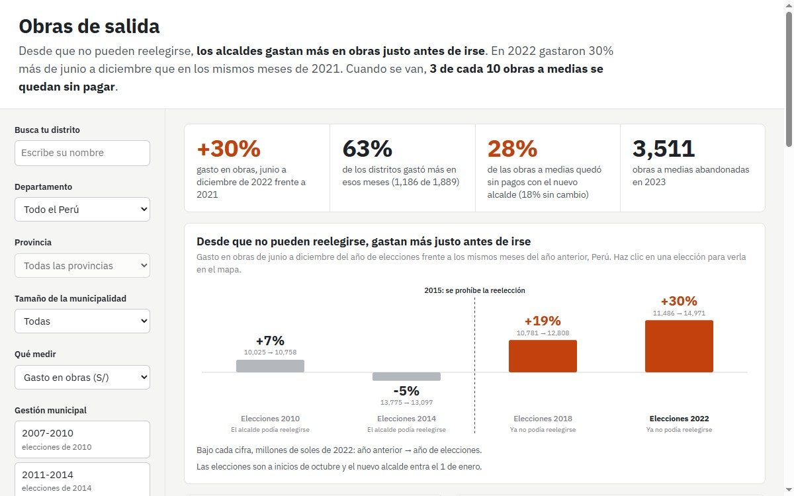
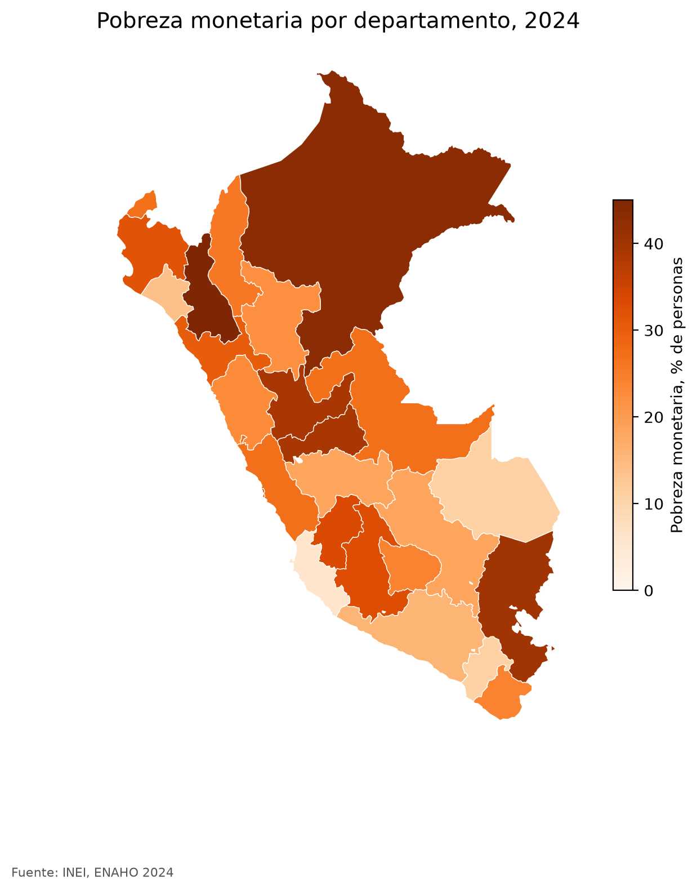

|
Nicolás Silva Andújar Consultor de asuntos públicos y de gobierno en Vali Consultores, con foco en la regulación de los sectores Pharma, Crop y Tech en la región andina. Sigo con datos los temas que marcan el debate público en el Perú, desde la seguridad hasta el gasto público y las curiosidades políticas. |

|
ProyectosPreguntas de política pública respondidas con datos abiertos del Estado peruano. Cada proyecto tiene su código y sus resultados publicados. El que más me representa está resaltado. |

|
Puntos negros. Dónde se repiten los siniestros fatales en las vías del Perú
Observatorio Nacional de Seguridad Vial y OpenStreetMap, 2021-2025 dashboard / código / reel en LinkedIn
Pregunta. ¿Dónde se repiten los siniestros fatales en las vías del Perú y qué tienen en común esos lugares?
|
|
 |
Obras de salida. Gasto municipal en obras y cambio de alcalde
MEF, ONPE y JNE, 2007-2026 dashboard / código
Pregunta. ¿Los alcaldes dejan la plata de obras para el final de su gestión? ¿Y qué pasa con esas obras cuando entra el siguiente?
|
|
 |
Skills de Claude Code para la ENAHO
INEI, Encuesta Nacional de Hogares 2024 código / mapa
Pregunta. ¿Puede un agente de IA descargar y limpiar la ENAHO y replicar la cifra oficial de pobreza?
|

DemoEl dashboard de Puntos negros. Baja dentro del recuadro para recorrerlo o ábrelo en pantalla completa. |
ReelPuntos negros en un minuto, como lo publiqué en LinkedIn. La narración es mi voz clonada con IA. |
Publicaciones |
De democracias y desencantos. Una radiografía de los determinantes de las actitudes frágiles hacia la democracia en los países andinos (2020-2023)
Nicolás Silva Andújar Tesis de licenciatura, PUCP, 2026. Presentada en el XIII Congreso Latinoamericano de Ciencia Política (ALACIP), Buenos Aires. La judicialización de los derechos reproductivos en perspectiva comparada. El Anticonceptivo Oral de Emergencia en Perú (2006-2009) y Chile (2007-2008) Nicolás Silva Andújar, María José Marrou Rivera, Hadaly Monzón Politai, 15(24), 129-154, 2024 |
|
Plantilla de Jon Barron. |